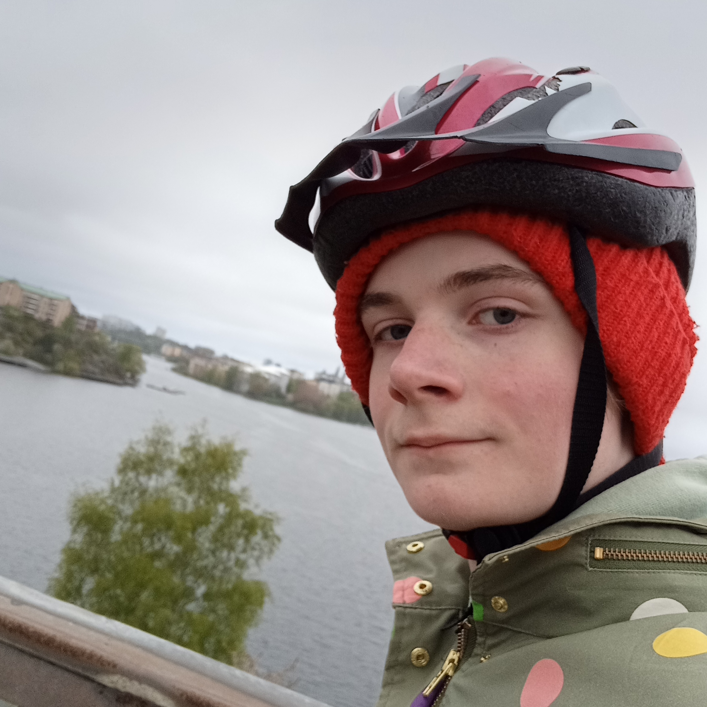

Här står det om Vilhelm

Kort om mig
Jag är en teknikintresserad, mångkunnig och samhällsvetande gymnasieelev på 17 vårar. Jag offrade lågstadiet till PS3 och Minecraft, mellanstadiet uppslukades av Overwatch, högstadiet försvann till Scrap Mechanic, Valorant och Hitman. Började programmera Python i 7:an och nu i gymnasiet har jag fortsatt med det och gått över mer till full-stack-utveckling. Tyvärr har jag generellt sett inte lika mycket tid som tidigare att dedikera till spel, men jag spelar ändå då och då. Istället tillbringar jag min tid mer åt pluggande och egna projekt. Det inkluderar projekt som Östra Kulten, broschyren “Om krisen, kriget eller Ulf Kristersson kommer” och Östra Radion. Men den största av dem är troligtvis den omtalade skolsatirtidningen: Östra Löken, som jag grundade tillsammans med Joar VT25.
Mina mål
Jag kommer ständigt på nya idéer på projekt och några av dem blir färdiga till någon nivå. Men mitt mål är inte att alla projekt ska bli klara, utan att genom att jag kastar så många ägg mot väggen att den snart spricker; göra mitt rykte legendariskt i skolans korridorer.
Erfarenheter
Som en flitig, smått perfektionistisk och idéfylld person så har jag mycket erfarenhet av riktigt arbete. Det inkluderar hur man håller sig till ett schema, hur man jobbar i grupp på ett stort projekt och att skriva professionellt. Jag har också mer grundläggande praktiska erfarenheter som att sköta en kassa, servera gäster och att arbeta i en kontorsmiljö. Jag är också väldigt erfaren i både svenska och engelska med mycket tid utomlands och i olika delar av Sverige. Allt det utan att behöva förlita mig på AI-fuskverktyg.